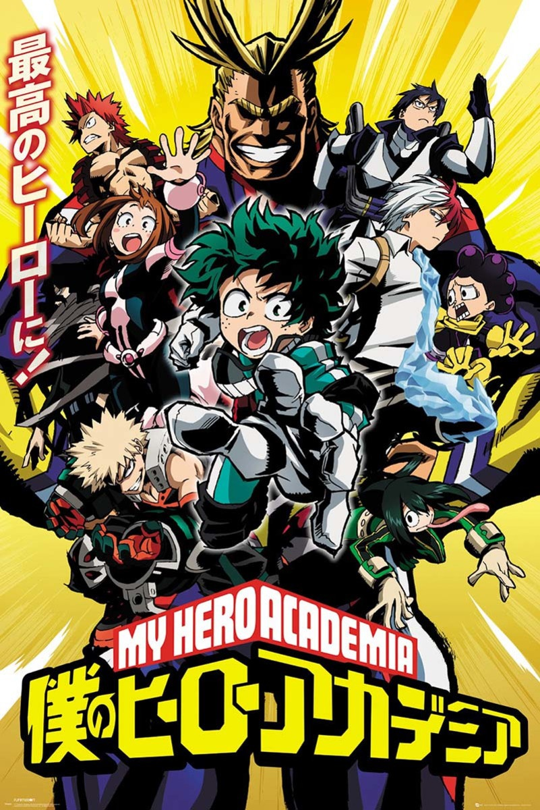

Boku no Hero

SINOPSE
- Em um mundo onde superpoderes (chamados de Quirks) se tornaram comuns e estão presentes em quase todas as pessoas, a sociedade foi moldada por esses poderes extraordinários. No entanto, nem todos nascem com um Quirk, e isso pode significar uma vida de dificuldades ou exclusão.